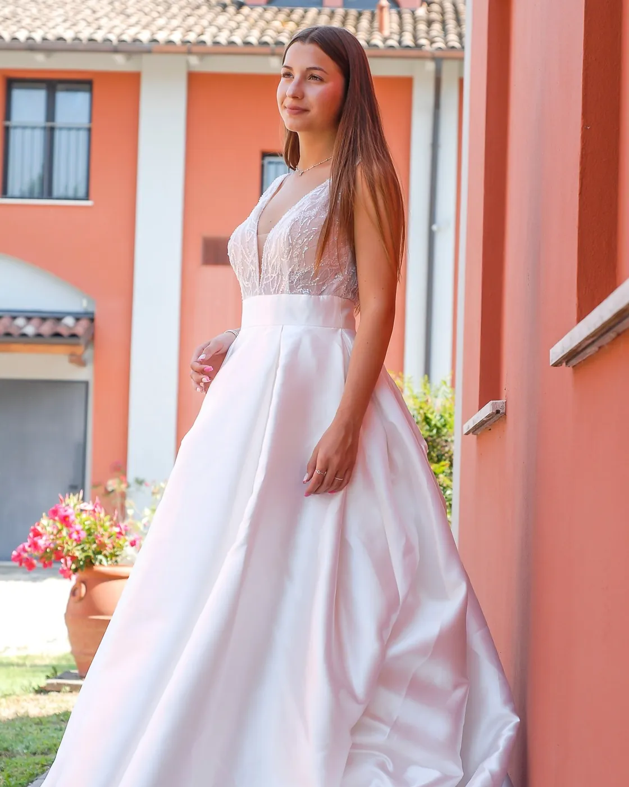
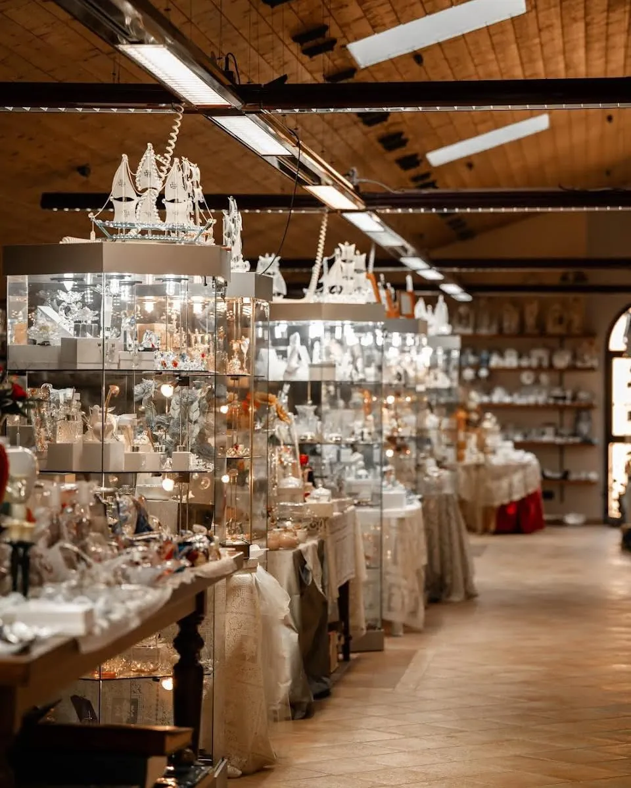
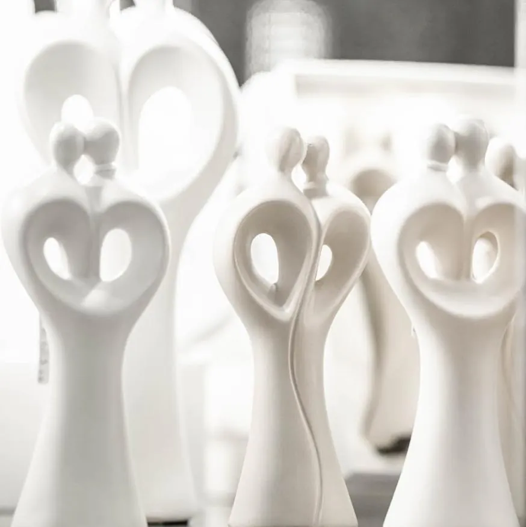
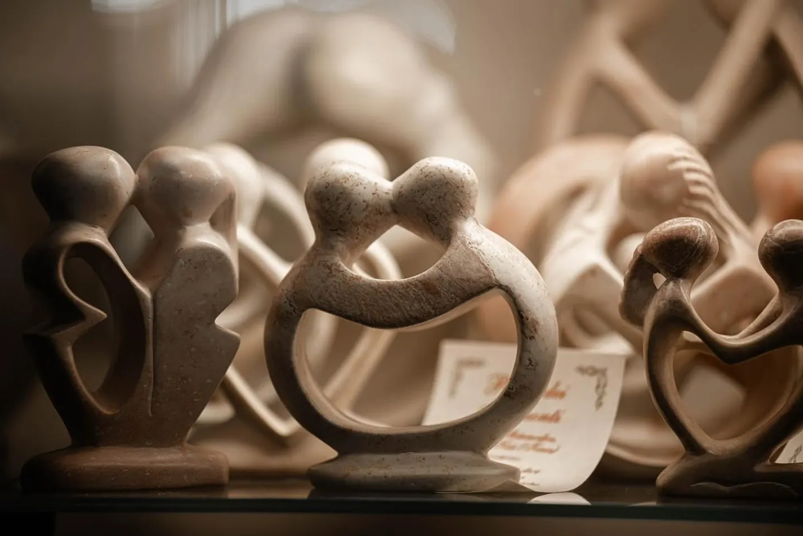
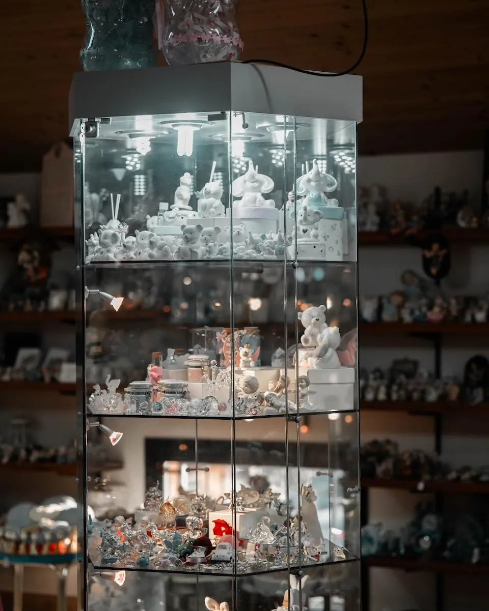
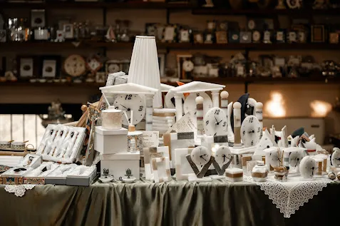
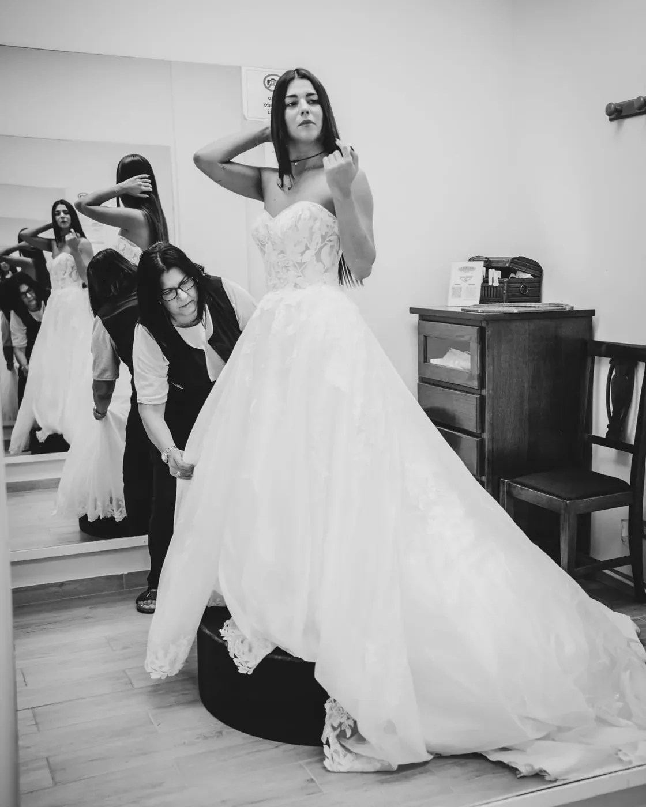
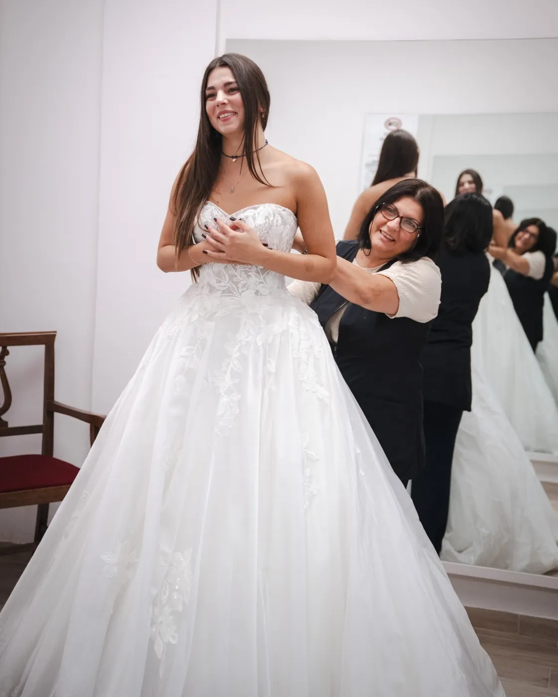
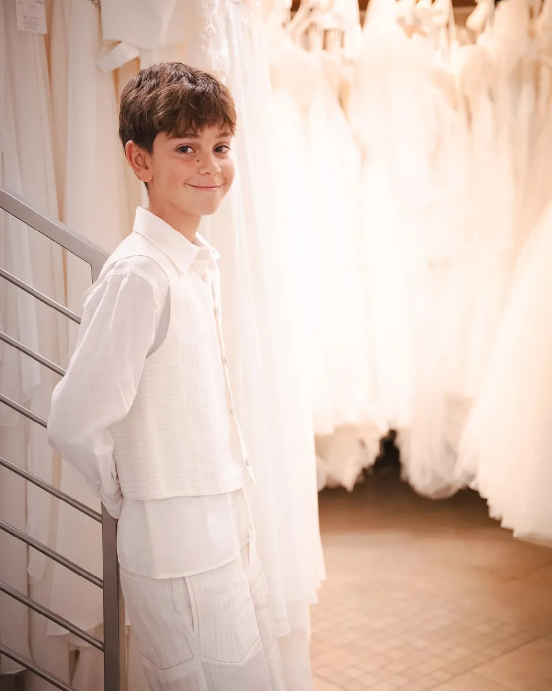

Graziella Centro Sposi: bomboniere e abiti da sposa a Bomporto


Per quale evento?
Tutte le bomboniereAbiti da sposa,
su misura
Gli abiti non si comprano online. Li provi in atelier da Sposi & Sposi e la nostra sartoria li adatta a te, dalla prima prova all'ultima cucitura.
Sposi & Sposi
Non lo sai finché non lo provi. L'atelier ha la sartoria in casa: Sara e Cinzia sistemano l'abito su di te.
Prenota la prova
Chi siamo
Il negozio di bomboniere l'ha aperto la mamma di Sara più di sessant'anni fa, in via Carlo Testa. Oggi al banco c'è William; in atelier ci sono Sara e Cinzia, con la sartoria in casa.
Quello che esce dal banco e dalla sartoria lo mostriamo su Instagram.
Seguici su InstagramDue piani di vetrine, sotto le travi
Online trovi una parte. In negozio ce ne sono circa 1.300, da toccare e personalizzare: confetti, nastri, bigliettini e il bollino col vostro nome.









437 recensioni
La media di chi ha scelto da noi bomboniere e abiti, su Matrimonio.com e Google. Ne trovate qui 25, con le loro parole.
Come lavoriamo
- Confezione a manoOgni pezzo passa dal nostro banco, uno per uno: scatola, nastro, confetti e bigliettino.
- Il vostro bollinoNomi e data sul bigliettino: li scrivete nella scheda e vedete l’anteprima prima di ordinare.
- Ritiro a BomportoGratuito in negozio, oppure spedizione: gratuita sopra i 180 €.
- Un consiglio veroScrivici o chiama il 059 909858: rispondiamo noi del negozio.